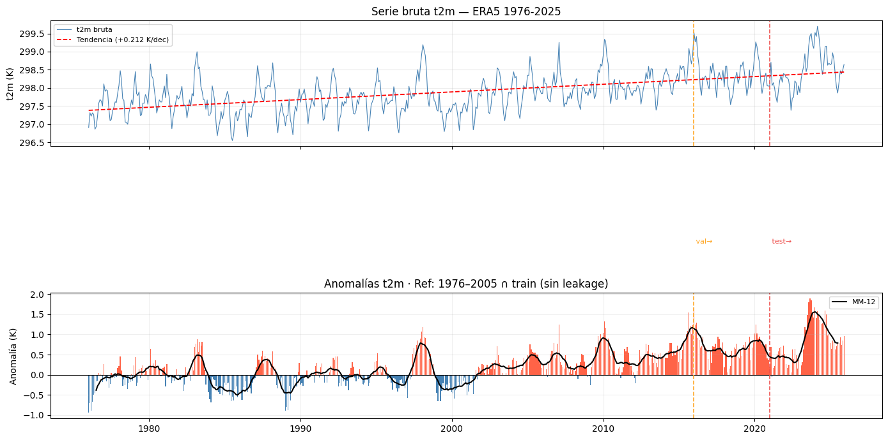

preprocessing.ipynb — ERA5 Caribe/Colombia · Anomalías T2M (1976–2025)#
Autores: Mateo Gómez · Miguel Jaimes · David Ibáñez — Universidad del Norte, 2026
Este notebook:
Procesa el dataset ERA5 y genera todos los artefactos necesarios para
modeling.ipynb.Exporta automáticamente
preprocesamiento.pycon las funciones reutilizables.Implementa split correcto por fecha del target (input_date + horizon).
Garantiza cero leakage en climatología, normalización y CV.
Solo datos reales ERA5. Resultados válidos como evidencia científica.
Carga de datos#
import os, sys, json, pickle, warnings, textwrap
warnings.filterwarnings("ignore")
import numpy as np
import pandas as pd
import xarray as xr
import matplotlib.pyplot as plt
from pathlib import Path
from scipy import stats as sp_stats
from sklearn.preprocessing import StandardScaler
SEED = 42
np.random.seed(SEED)
# ── Rutas ─────────────────────────────────────────────────────────────────────
NC_PATH = Path(r"C:\Users\Hp\Documents\era5_caribe_mensual_1976_2025_UNIFICADO.nc")
OUTPUT_DIR = Path("outputs_preprocessing")
RONI_PATH= Path(r"C:\Users\Hp\Documents\Seminario\docs\RONI.ascii.txt")
OUTPUT_DIR.mkdir(exist_ok=True)
# ── Parámetros temporales ─────────────────────────────────────────────────────
T_TOTAL = 600 # 1976-01 → 2025-12 (validado en EDA)
CLIM_START = "1976" # Período WMO (pre-aceleración calentamiento)
CLIM_END = "2005"
TEST_MONTHS = 60 # 2021-01 → 2025-12 — holdout estricto
VAL_MONTHS = 60 # 2016-01 → 2020-12 — selección de modelos
HORIZON = 3 # meses adelante (estacional; ACF t2m justifica h≤6)
# ── Variables ERA5 ───────────────────────────────────────────────────────────
VARS_NO_STEP = ["t2m", "sst", "msl", "u10", "v10"]
VARS_STEP = ["tp", "ssr", "strd", "slhf"] # acumuladas → suma sobre step
TARGET = "t2m"
# ssrd eliminada (corr=1.00 con ssr) y e eliminada (corr=1.00 con slhf) — EDA VIF
FEATURES = ["sst", "msl", "u10", "v10", "tp", "ssr", "strd", "slhf"]
# ── Lags diferenciados (motivación física, EDA ACF/PACF) ─────────────────────
LAG_CONFIG = {
"sst" : [1, 2, 3, 6, 12], # inercia oceánica — ACF hasta lag 12
"t2m" : [1, 2, 3, 6, 12], # autorregresivo — ACF hasta lag 12
"roni" : [1, 2, 3, 6],
"strd" : [1, 2, 3, 6],
"tp" : [1, 2, 3, 6],
"u10" : [1, 2, 3],
"v10" : [1, 2, 3],
"msl" : [1, 2, 3],
"ssr" : [1, 2, 3],
"slhf" : [1, 2, 3],
}
# ── Block CV ──────────────────────────────────────────────────────────────────
CV_N_SPLITS = 5
CV_GAP = 12 # gap=12: ACF climática significativa hasta lag ~12m (EDA)
# ── trend_idx ────────────────────────────────────────────────────────────────
# Se construye como np.linspace(0, 1, n_samples) sobre la serie completa.
# Representa el calentamiento secular documentado por Mann-Kendall en el EDA
# (+0.21 K/dec en t2m). Se guarda en metadata su definición exacta.
TREND_IDX_START = "1976-01" # primer mes de la serie (para reproducibilidad)
print("=" * 60)
print(" PREPROCESSING ERA5 — Caribe/Colombia 1976–2025")
print("=" * 60)
print(f" NC_PATH : {NC_PATH}")
print(f" OUTPUT_DIR : {OUTPUT_DIR}")
print(f" HORIZON : {HORIZON} meses")
print(f" TEST : {TEST_MONTHS}m VAL: {VAL_MONTHS}m TRAIN: {T_TOTAL-TEST_MONTHS-VAL_MONTHS}m")
print(f" CV GAP : {CV_GAP}m | N_SPLITS: {CV_N_SPLITS}")
print(f" CLIM REF : {CLIM_START}–{CLIM_END} ∩ train (sin leakage)")
============================================================
PREPROCESSING ERA5 — Caribe/Colombia 1976–2025
============================================================
NC_PATH : C:\Users\Hp\Documents\era5_caribe_mensual_1976_2025_UNIFICADO.nc
OUTPUT_DIR : outputs_preprocessing
HORIZON : 3 meses
TEST : 60m VAL: 60m TRAIN: 480m
CV GAP : 12m | N_SPLITS: 5
CLIM REF : 1976–2005 ∩ train (sin leakage)
# ── Carga y reducción de step ─────────────────────────────────────────────────
assert NC_PATH.exists(), f"Archivo no encontrado: {NC_PATH}"
ds = xr.open_dataset(NC_PATH)
for var in VARS_STEP:
if var in ds and "step" in ds[var].dims:
ds[var] = ds[var].sum(dim="step", skipna=True)
time_index = pd.to_datetime(ds.time.values)
assert len(time_index) == T_TOTAL, (
f"Esperados {T_TOTAL} meses, encontrados {len(time_index)}."
)
print(f"Dataset: {ds.dims}")
print(f"Rango : {time_index[0].date()} → {time_index[-1].date()} ({len(time_index)}m)")
print(f"Rango temporal validado")
def load_roni(roni_path: str, date_start: str = "1976-01",
date_end: str = "2025-12") -> pd.Series:
"""
RONI de NOAA — formato: SEAS YR ANOM (3 columnas, sin TOTAL)
Diferencia con ONI: no tiene columna TOTAL — índice en columna 2, no 3.
"""
SEAS_TO_MONTH = {
"DJF": 1, "JFM": 2, "FMA": 3, "MAM": 4,
"AMJ": 5, "MJJ": 6, "JJA": 7, "JAS": 8,
"ASO": 9, "SON": 10, "OND": 11, "NDJ": 12,
}
rows = []
with open(roni_path, encoding="utf-8-sig") as f:
for line in f:
parts = line.strip().split()
if len(parts) != 3 or parts[0] not in SEAS_TO_MONTH:
continue # salta encabezado y líneas vacías
seas = parts[0]
yr = int(parts[1])
anom = float(parts[2]) # ← columna 2, no 3
rows.append({"year": yr, "month": SEAS_TO_MONTH[seas], "roni": anom})
print(f" Filas parseadas: {len(rows)}")
df_roni = pd.DataFrame(rows)
df_roni["date"] = pd.to_datetime(
{"year": df_roni["year"], "month": df_roni["month"], "day": 1}
)
df_roni = df_roni.drop_duplicates("date").set_index("date").sort_index()
idx_full = pd.date_range(date_start, date_end, freq="MS")
roni_series = df_roni["roni"].reindex(idx_full).interpolate(method="time")
assert roni_series.isna().sum() == 0, \
f"RONI tiene NaN — el archivo no cubre {date_start}→{date_end}"
print(f" RONI cargado: {roni_series.index[0].date()} → "
f"{roni_series.index[-1].date()}")
print(f" Rango: [{roni_series.min():.2f}, {roni_series.max():.2f}] "
f"σ={roni_series.std():.3f}")
return roni_series
# ── Integridad ────────────────────────────────────────────────────────────────
print("\n=== INTEGRIDAD ===")
for var in FEATURES + [TARGET]:
if var in ds:
n_nan = int(ds[var].isnull().sum())
tag = " (NaN oceánicos — esperado)" if var == "sst" and n_nan > 0 else ""
print(f" {var:<8}: {n_nan:>10,} NaN{tag}")
Dataset: FrozenMappingWarningOnValuesAccess({'step': 12, 'latitude': 73, 'longitude': 65, 'time': 600})
Rango : 1976-01-01 → 2025-12-01 (600m)
Rango temporal validado
=== INTEGRIDAD ===
sst : 2,010,600 NaN (NaN oceánicos — esperado)
msl : 0 NaN
u10 : 0 NaN
v10 : 0 NaN
tp : 0 NaN
ssr : 0 NaN
strd : 0 NaN
slhf : 0 NaN
t2m : 0 NaN
# ── Promedio espacial → series 1D ─────────────────────────────────────────────
def spatial_mean(ds, variables, time_index):
data = {}
for var in variables:
if var not in ds:
continue
arr = ds[var]
sp = [d for d in ["latitude", "longitude"] if d in arr.dims]
data[var] = arr.mean(dim=sp, skipna=True).values if sp else arr.values
df = pd.DataFrame(data, index=time_index)
df.index.name = "time"
n_nan = df.isna().sum()
if n_nan.sum() > 0:
df = df.interpolate(method="time", limit_direction="both")
print(" NaN imputados por interpolación lineal:")
for col in df.columns:
if n_nan[col] > 0:
print(f" {col}: {n_nan[col]} → {df[col].isna().sum()}")
assert df.isna().sum().sum() == 0, "NaN residuales tras imputación"
return df.sort_index()
df_raw = spatial_mean(ds, [TARGET] + FEATURES, time_index)
print(f"DataFrame: {df_raw.shape}")
df_raw.describe().round(4)
DataFrame: (600, 9)
| t2m | sst | msl | u10 | v10 | tp | ssr | strd | slhf | |
|---|---|---|---|---|---|---|---|---|---|
| count | 600.0000 | 600.0000 | 600.0000 | 600.0000 | 600.0000 | 600.0000 | 6.000000e+02 | 6.000000e+02 | 6.000000e+02 |
| mean | 297.9096 | 300.3181 | 101147.5469 | -0.7425 | -0.2790 | 0.0038 | 7.693591e+06 | 1.761379e+07 | -4.188290e+06 |
| std | 0.5487 | 0.6198 | 90.3058 | 0.4663 | 0.6122 | 0.0009 | 5.408206e+05 | 1.758951e+05 | 2.857795e+05 |
| min | 296.5496 | 298.6006 | 100907.3125 | -1.7792 | -1.5362 | 0.0011 | 6.396513e+06 | 1.704058e+07 | -4.849683e+06 |
| 25% | 297.5473 | 299.9102 | 101085.1191 | -1.1018 | -0.8665 | 0.0032 | 7.310394e+06 | 1.752116e+07 | -4.409025e+06 |
| 50% | 297.8699 | 300.3443 | 101136.5781 | -0.7369 | -0.0796 | 0.0039 | 7.684014e+06 | 1.762778e+07 | -4.176876e+06 |
| 75% | 298.2376 | 300.7341 | 101209.0176 | -0.3979 | 0.2495 | 0.0044 | 8.070790e+06 | 1.773584e+07 | -3.960422e+06 |
| max | 299.6977 | 302.2169 | 101398.0625 | 0.5829 | 0.7164 | 0.0056 | 9.443648e+06 | 1.813644e+07 | -3.562258e+06 |
# ── División temporal (por fecha del INPUT, no del target) ────────────────────
# El split correcto por fecha del TARGET se implementa en build_features_and_split
# usando: target_date = input_date + HORIZON
# Aquí definimos los límites en términos de fecha de INPUT.
n_total = len(df_raw)
train_end = n_total - TEST_MONTHS - VAL_MONTHS # 480
val_end = n_total - TEST_MONTHS # 540
t_train = df_raw.index[:train_end]
t_val = df_raw.index[train_end:val_end]
t_test = df_raw.index[val_end:]
print(f"INPUT dates:")
print(f" Train: {t_train[0].date()} → {t_train[-1].date()} ({len(t_train)}m)")
print(f" Val : {t_val[0].date()} → {t_val[-1].date()} ({len(t_val)}m)")
print(f" Test : {t_test[0].date()} → {t_test[-1].date()} ({len(t_test)}m)")
print(f" Total: {n_total}m")
INPUT dates:
Train: 1976-01-01 → 2015-12-01 (480m)
Val : 2016-01-01 → 2020-12-01 (60m)
Test : 2021-01-01 → 2025-12-01 (60m)
Total: 600m
# ── Visualización: serie bruta + anomalías con límites ───────────────────────
def compute_anomalies(df_full, train_end_idx, clim_start, clim_end):
df_train = df_full.iloc[:train_end_idx]
df_ref = df_train.loc[clim_start:clim_end]
if len(df_ref) == 0:
print(f" AVISO: {clim_start}-{clim_end} no intersecta train → usando todo train")
df_ref = df_train
clim = df_ref.groupby(df_ref.index.month).mean()
print(f" Climatología: {clim_start}–{clim_end} ∩ train ({len(df_ref)}m de referencia)")
df_anom = df_full.copy()
for m in range(1, 13):
mask = df_full.index.month == m
df_anom.loc[mask] = df_full.loc[mask].values - clim.loc[m].values
return df_anom, clim
df_anom, clim_df = compute_anomalies(df_raw, train_end, CLIM_START, CLIM_END)
fig, axes = plt.subplots(2, 1, figsize=(14, 7), sharex=True)
ax = axes[0]
ax.plot(df_raw.index, df_raw[TARGET], color="steelblue", lw=0.8, label="t2m bruta")
xn = np.arange(len(df_raw))
sl, ic, *_ = sp_stats.linregress(xn, df_raw[TARGET].values)
ax.plot(df_raw.index, sl*xn + ic, "r--", lw=1.3,
label=f"Tendencia (+{sl*12*10:.3f} K/dec)")
for idx, label, color in [(train_end,"val→","#FFA726"),(val_end,"test→","#EF5350")]:
ax.axvline(df_raw.index[idx], color=color, lw=1.2, ls="--")
ax.text(df_raw.index[idx], df_raw[TARGET].max()*0.98, f" {label}", color=color, fontsize=8)
ax.set_ylabel("t2m (K)"); ax.legend(fontsize=8); ax.grid(alpha=0.25)
ax.set_title("Serie bruta t2m — ERA5 1976-2025")
ax2 = axes[1]
vals = df_anom[TARGET].values
ax2.bar(df_anom.index, vals,
color=np.where(vals >= 0, "tomato", "steelblue"), width=20, linewidth=0)
ax2.plot(df_anom.index,
pd.Series(vals, index=df_anom.index).rolling(12, center=True).mean(),
"k-", lw=1.5, label="MM-12")
ax2.axhline(0, color="black", lw=0.8)
for idx, color in [(train_end,"#FFA726"),(val_end,"#EF5350")]:
ax2.axvline(df_raw.index[idx], color=color, lw=1.2, ls="--")
ax2.set_ylabel("Anomalía (K)"); ax2.legend(fontsize=8); ax2.grid(alpha=0.2)
ax2.set_title(f"Anomalías t2m · Ref: {CLIM_START}–{CLIM_END} ∩ train (sin leakage)")
plt.tight_layout()
plt.savefig(OUTPUT_DIR / "fig_anomalias_t2m.png", dpi=150, bbox_inches="tight")
plt.show()
Climatología: 1976–2005 ∩ train (360m de referencia)

Feature engenieering#
# ── Build features con split correcto por fecha del TARGET ────────────────────
def build_features(df_anom, lag_config, target="t2m"):
n = len(df_anom)
feat = pd.DataFrame(index=df_anom.index)
# Lags por variable (no incluye target como feature directa)
for var, lags in lag_config.items():
if var not in df_anom.columns or var == target:
continue
for lag in lags:
feat[f"{var}_lag{lag}"] = df_anom[var].shift(lag)
# Lags autoregresivos de t2m
for lag in lag_config.get(target, [1, 2, 3, 6, 12]):
feat[f"{target}_lag{lag}"] = df_anom[target].shift(lag)
# Rolling means (shift(1) → sin contemporáneo)
for var in ["sst", target]:
if var in df_anom.columns:
s = df_anom[var].shift(1)
feat[f"{var}_roll3"] = s.rolling(3, min_periods=2).mean()
feat[f"{var}_roll6"] = s.rolling(6, min_periods=3).mean()
# Cíclicas mensuales
feat["month_sin"] = np.sin(2 * np.pi * df_anom.index.month / 12)
feat["month_cos"] = np.cos(2 * np.pi * df_anom.index.month / 12)
# Tendencia lineal (calentamiento secular +0.21K/dec — Mann-Kendall EDA)
feat["trend_idx"] = np.linspace(0, 1, n)
return feat
# ── Cargar RONI (efectivo feb 2026, reemplaza ONI oficial) ────────────────────
roni = load_roni(
RONI_PATH, # "data/RONI.ascii.txt"
date_start=str(df_raw.index[0])[:7],
date_end=str(df_raw.index[-1])[:7],
)
roni_safe = roni.shift(1)
df_anom["roni"] = roni_safe
df_anom["roni"] = roni.reindex(df_anom.index)
# Verificar alineación
assert df_anom["roni"].isna().sum() == 0, "RONI tiene NaN tras alineación"
print(f" RONI integrado: {df_anom['roni'].describe().round(3).to_dict()}")
# ── Build features ────────────────────────────────────────────────────────────
feat_df = build_features(df_anom, LAG_CONFIG, TARGET)
feat_df= build_features(df_anom, LAG_CONFIG, TARGET)
TARGET_COL= f"{TARGET}_target"
# TARGET en t + HORIZON: fecha del target = fecha del input + HORIZON meses
# --- TARGET ORIGINAL (para modelos tabulares) ---
feat_df[TARGET_COL] = df_anom[TARGET].shift(-HORIZON)
# --- TARGET DIFERENCIAL (para DL) ---
TARGET_DIFF_COL = f"{TARGET}_diff_target"
feat_df[TARGET_DIFF_COL] = (
df_anom[TARGET].shift(-HORIZON) - df_anom[TARGET]
)
feat_df= feat_df.dropna()
FEATURE_COLS = [
c for c in feat_df.columns
if c not in [TARGET_COL, TARGET_DIFF_COL]
]
# ── SPLIT CORRECTO POR FECHA DEL TARGET ──────────────────────────────────────
# La muestra con input_date=d tiene target_date = d + HORIZON meses.
# Para que ningún target futuro contamine train ni val, el split se hace así:
# - train: muestras cuyo TARGET DATE < t_cutoff_val
# - val : muestras cuyo TARGET DATE in [t_cutoff_val, t_cutoff_test)
# - test : muestras cuyo TARGET DATE >= t_cutoff_test
# Esto equivale a: input_date < t_cutoff_val - HORIZON
# que es lo que implementamos abajo usando target_date directamente.
# Fechas del target para cada muestra
offset = pd.DateOffset(months=HORIZON)
target_dates = feat_df.index + offset # target_date = input_date + h
t_cutoff_val = df_raw.index[train_end] # 2016-01-01
t_cutoff_test = df_raw.index[val_end] # 2021-01-01
mask_train = target_dates < t_cutoff_val
mask_val = (target_dates >= t_cutoff_val) & (target_dates < t_cutoff_test)
mask_test = target_dates >= t_cutoff_test
X_train_raw = feat_df.loc[mask_train, FEATURE_COLS].values
y_train_raw = feat_df.loc[mask_train, TARGET_COL].values
X_val_raw = feat_df.loc[mask_val, FEATURE_COLS].values
y_val_raw = feat_df.loc[mask_val, TARGET_COL].values
X_test_raw = feat_df.loc[mask_test, FEATURE_COLS].values
y_test_raw = feat_df.loc[mask_test, TARGET_COL].values
# --- TARGET DIFERENCIAL (DL) ---
y_train_diff_raw = feat_df.loc[mask_train, TARGET_DIFF_COL].values
y_val_diff_raw = feat_df.loc[mask_val, TARGET_DIFF_COL].values
y_test_diff_raw = feat_df.loc[mask_test, TARGET_DIFF_COL].values
t_train_idx = feat_df.index[mask_train]
t_val_idx = feat_df.index[mask_val]
t_test_idx = feat_df.index[mask_test]
y_train_base_raw = df_anom.loc[t_train_idx, TARGET].values
y_val_base_raw = df_anom.loc[t_val_idx, TARGET].values
y_test_base_raw = df_anom.loc[t_test_idx, TARGET].values
td_train = target_dates[mask_train]
td_val = target_dates[mask_val]
td_test = target_dates[mask_test]
n_discarded = len(feat_df) - len(X_train_raw) - len(X_val_raw) - len(X_test_raw)
print("Split por TARGET DATE (input + HORIZON):")
print(f" Train: input {t_train_idx[0].date()} → {t_train_idx[-1].date()} "
f"| target {td_train[0].date()} → {td_train[-1].date()} ({len(X_train_raw)})")
print(f" Val : input {t_val_idx[0].date()} → {t_val_idx[-1].date()} "
f"| target {td_val[0].date()} → {td_val[-1].date()} ({len(X_val_raw)})")
print(f" Test : input {t_test_idx[0].date()} → {t_test_idx[-1].date()} "
f"| target {td_test[0].date()} → {td_test[-1].date()} ({len(X_test_raw)})")
print(f" Muestras descartadas por horizon/lag: {n_discarded}")
print(f" Features: {len(FEATURE_COLS)}")
Filas parseadas: 914
RONI cargado: 1976-01-01 → 2025-12-01
Rango: [-1.94, 2.52] σ=0.882
RONI integrado: {'count': 600.0, 'mean': -0.008, 'std': 0.882, 'min': -1.94, '25%': -0.612, '50%': -0.075, '75%': 0.52, 'max': 2.52}
Split por TARGET DATE (input + HORIZON):
Train: input 1977-01-01 → 2015-09-01 | target 1977-04-01 → 2015-12-01 (465)
Val : input 2015-10-01 → 2020-09-01 | target 2016-01-01 → 2020-12-01 (60)
Test : input 2020-10-01 → 2025-09-01 | target 2021-01-01 → 2025-12-01 (60)
Muestras descartadas por horizon/lag: 0
Features: 44
Normalizacion y splits#
se realiza la normalizacion de los datos utilizando standard scaler para el modelado
# ── Normalización — fit SOLO sobre train ─────────────────────────────────────
scaler_X = StandardScaler()
scaler_y = StandardScaler()
scaler_y_diff = StandardScaler()
X_train = scaler_X.fit_transform(X_train_raw)
X_val = scaler_X.transform(X_val_raw)
X_test = scaler_X.transform(X_test_raw)
y_train = scaler_y.fit_transform(y_train_raw.reshape(-1, 1)).ravel()
y_val = scaler_y.transform(y_val_raw.reshape(-1, 1)).ravel()
y_test = scaler_y.transform(y_test_raw.reshape(-1, 1)).ravel()
y_train_diff = scaler_y_diff.fit_transform(
y_train_diff_raw.reshape(-1, 1)
).ravel()
y_val_diff = scaler_y_diff.transform(
y_val_diff_raw.reshape(-1, 1)
).ravel()
y_test_diff = scaler_y_diff.transform(
y_test_diff_raw.reshape(-1, 1)
).ravel()
print("Normalización (fit=train):")
print(f" X_train: μ={X_train.mean():.5f} σ={X_train.std():.5f} ← esperado ≈ (0,1)")
print(f" X_val : μ={X_val.mean():.4f} (no centrado — correcto)")
print(f" X_test : μ={X_test.mean():.4f} (no centrado — correcto)")
print(f" y_train: μ={y_train.mean():.5f} σ={y_train.std():.5f}")
Normalización (fit=train):
X_train: μ=0.00000 σ=1.00000 ← esperado ≈ (0,1)
X_val : μ=0.5336 (no centrado — correcto)
X_test : μ=0.6415 (no centrado — correcto)
y_train: μ=0.00000 σ=1.00000
Block Time Series CV con gap (implementación propia)#
Se implementó una estrategia de Block Cross-Validation para series temporales sobre el conjunto de entrenamiento (X_train), utilizando una función personalizada:
block_timeseries_cv(n_samples, n_splits, gap) Características del esquema
Bloques secuenciales (sin aleatoriedad) Los folds respetan estrictamente el orden temporal.
Entrenamiento expansivo (forward chaining) En cada fold, el conjunto de entrenamiento crece progresivamente:
Fold 1: [0 → t1] Fold 2: [0 → t2] Fold 3: [0 → t3]
Gap temporal (gap) entre train y validation Se introduce una separación explícita para evitar data leakage debido a:
autocorrelación temporal
uso de lags
horizonte de predicción (target shift) Bloques de validación del mismo tamaño base Cada fold valida sobre un segmento futuro no solapado. Sin overlap garantizado Se verifica que train ∩ validation = ∅ en todos los folds.
# ── Block CV — sobre samples de TRAIN con target correcto ────────────────────
def block_timeseries_cv(n_samples, n_splits, gap):
"""Block CV con gap temporal. Folds sobre samples válidos (post-horizon)."""
block = (n_samples - gap * n_splits) // (n_splits + 1)
assert block > 0, f"block={block} ≤ 0. Reducir n_splits o gap."
splits = []
for i in range(n_splits):
tr_end = block * (i + 1)
val_start = tr_end + gap
val_end = min(val_start + block, n_samples)
if val_end > val_start:
splits.append((np.arange(0, tr_end), np.arange(val_start, val_end)))
return splits
cv_splits = block_timeseries_cv(len(X_train), CV_N_SPLITS, CV_GAP)
print(f"Block CV: {len(cv_splits)} folds | gap={CV_GAP}m | n_train={len(X_train)}")
for i, (tr, va) in enumerate(cv_splits):
assert len(np.intersect1d(tr, va)) == 0
print(f" Fold {i+1}: train=[0:{len(tr)}] ({len(tr)}m) | val=[{va[0]}:{va[-1]+1}] ({len(va)}m)")
print("\n Sin overlap en ningún fold")
Block CV: 5 folds | gap=12m | n_train=465
Fold 1: train=[0:67] (67m) | val=[79:146] (67m)
Fold 2: train=[0:134] (134m) | val=[146:213] (67m)
Fold 3: train=[0:201] (201m) | val=[213:280] (67m)
Fold 4: train=[0:268] (268m) | val=[280:347] (67m)
Fold 5: train=[0:335] (335m) | val=[347:414] (67m)
Sin overlap en ningún fold
Guardado y exportacion#
se guardan los archivos preprocesados para volver a ser utilizados en las otras partes del proyecto
# ── Guardado de artefactos ────────────────────────────────────────────────────
np.savez_compressed(
OUTPUT_DIR / "sequences.npz",
X_train=X_train, y_train=y_train,
X_val=X_val, y_val=y_val,
X_test=X_test, y_test=y_test,
y_train_raw=y_train_raw,
y_val_raw=y_val_raw,
y_test_raw=y_test_raw,
# target diferencial
y_train_diff=y_train_diff,
y_val_diff=y_val_diff,
y_test_diff=y_test_diff,
y_train_diff_raw=y_train_diff_raw,
y_val_diff_raw=y_val_diff_raw,
y_test_diff_raw=y_test_diff_raw,
# ── AGREGAR: y_base = t2m(t) en K, para reconstrucción en evaluation ──
y_train_base_raw=y_train_base_raw,
y_val_base_raw=y_val_base_raw,
y_test_base_raw=y_test_base_raw,
# fechas
target_dates_train=np.array(td_train.strftime("%Y-%m-%d"), dtype=str),
target_dates_val=np.array(td_val.strftime("%Y-%m-%d"), dtype=str),
target_dates_test=np.array(td_test.strftime("%Y-%m-%d"), dtype=str),
)
print("sequences.npz (incluye target_dates_*)")
with open(OUTPUT_DIR / "scaler_X.pkl", "wb") as f: pickle.dump(scaler_X, f)
with open(OUTPUT_DIR / "scaler_y.pkl", "wb") as f: pickle.dump(scaler_y, f)
with open(OUTPUT_DIR / "scaler_y_diff.pkl", "wb") as f:
pickle.dump(scaler_y_diff, f)
print("scaler_X.pkl | scaler_y.pkl")
print(" scaler_y_diff.pkl")
clim_df.to_csv(OUTPUT_DIR / "climatologia.csv")
print("climatologia.csv")
with open(OUTPUT_DIR / "cv_splits.pkl", "wb") as f: pickle.dump(cv_splits, f)
print("cv_splits.pkl")
meta = {
"horizon" : HORIZON,
"target" : TARGET,
"feature_cols" : FEATURE_COLS,
"n_features" : len(FEATURE_COLS),
"clim_period" : [CLIM_START, CLIM_END],
"train_input_period" : [str(t_train_idx[0].date()), str(t_train_idx[-1].date())],
"train_target_period" : [str(td_train[0].date()), str(td_train[-1].date())],
"val_input_period" : [str(t_val_idx[0].date()), str(t_val_idx[-1].date())],
"val_target_period" : [str(td_val[0].date()), str(td_val[-1].date())],
"test_input_period" : [str(t_test_idx[0].date()), str(t_test_idx[-1].date())],
"test_target_period" : [str(td_test[0].date()), str(td_test[-1].date())],
"n_train" : int(len(X_train)),
"n_val" : int(len(X_val)),
"n_test" : int(len(X_test)),
"n_discarded" : int(n_discarded),
"cv_n_splits" : CV_N_SPLITS,
"cv_gap" : CV_GAP,
"seed" : SEED,
"lag_config" : LAG_CONFIG,
"vars_step" : VARS_STEP,
"vars_no_step" : VARS_NO_STEP,
"trend_idx" : {
"definition": "np.linspace(0, 1, n_samples_total)",
"start_date" : TREND_IDX_START,
"rationale" : "Mann-Kendall +0.21 K/dec (EDA); captura calentamiento secular",
},
"nc_path" : str(NC_PATH),
"note" : (
"Split target-aware: mask usa target_date = input_date + horizon. "
"Climatología WMO 1976-2005 intersectada con train (sin leakage). "
"Block CV gap=12 sobre samples de train post-horizon. "
"Solo datos reales ERA5."
),
}
with open(OUTPUT_DIR / "pipeline_metadata.json", "w") as f:
json.dump(meta, f, indent=2)
print("pipeline_metadata.json")
print(f"\n{'='*55}")
print(f" ARTEFACTOS EN {OUTPUT_DIR}/")
print(f"{'='*55}")
for fp in sorted(OUTPUT_DIR.iterdir()):
print(f" {fp.name:<40} {fp.stat().st_size/1024:>8.1f} KB")
print(f"\n X shape : (n, {len(FEATURE_COLS)})")
print(f" Horizonte: {HORIZON}m | Listo para modeling.ipynb")
sequences.npz (incluye target_dates_*)
scaler_X.pkl | scaler_y.pkl
scaler_y_diff.pkl
climatologia.csv
cv_splits.pkl
pipeline_metadata.json
=======================================================
ARTEFACTOS EN outputs_preprocessing/
=======================================================
climatologia.csv 1.2 KB
cv_splits.pkl 5.7 KB
fig_anomalias_t2m.png 221.4 KB
pipeline_metadata.json 2.7 KB
scaler_X.pkl 1.5 KB
scaler_y.pkl 0.5 KB
scaler_y_diff.pkl 0.5 KB
sequences.npz 193.5 KB
X shape : (n, 44)
Horizonte: 3m | Listo para modeling.ipynb
se exporta el .py que se utilizara en otras partes del preprocesamiento
# ── Exportar preprocesamiento.py (módulo reutilizable para modeling.ipynb) ────
MODULE_CODE = r'''
import json, pickle, warnings
warnings.filterwarnings("ignore")
import numpy as np
import pandas as pd
import xarray as xr
from pathlib import Path
from sklearn.preprocessing import StandardScaler
from dataclasses import dataclass, field
from typing import Optional
SEED = 42
np.random.seed(SEED)
@dataclass
class PreprocessingConfig:
nc_path : str
roni_path : str = r"C:\Users\Hp\Documents\Seminario\docs\RONI.ascii.txt"
target : str = "t2m"
features : list = field(default_factory=lambda: [
"sst", "msl", "u10", "v10", "tp", "ssr", "strd", "slhf"
])
vars_step : list = field(default_factory=lambda: ["tp", "ssr", "strd", "slhf"])
clim_start : str = "1976"
clim_end : str = "2005"
lag_config : dict = field(default_factory=lambda: {
"sst" :[1,2,3,6,12], "t2m":[1,2,3,6,12],"roni" : [1, 2, 3, 6],
"strd":[1,2,3,6], "tp" :[1,2,3,6],
"u10" :[1,2,3], "v10":[1,2,3],
"msl" :[1,2,3], "ssr":[1,2,3], "slhf":[1,2,3],
})
horizon : int = 3
test_months : int = 60
val_months : int = 60
cv_n_splits : int = 5
cv_gap : int = 12
output_dir : str = "outputs_preprocessing"
t_total : int = 600
def load_dataset(cfg: PreprocessingConfig) -> tuple:
assert Path(cfg.nc_path).exists(), f"Archivo no encontrado: {cfg.nc_path}"
ds = xr.open_dataset(cfg.nc_path)
for var in cfg.vars_step:
if var in ds and "step" in ds[var].dims:
ds[var] = ds[var].sum(dim="step", skipna=True)
time_index = pd.to_datetime(ds.time.values)
assert len(time_index) == cfg.t_total
return ds, time_index
def load_roni(roni_path: str, date_start: str = "1976-01",
date_end: str = "2025-12") -> pd.Series:
"""
RONI de NOAA — formato: SEAS YR ANOM (3 columnas, sin TOTAL)
Diferencia con ONI: no tiene columna TOTAL — índice en columna 2, no 3.
"""
SEAS_TO_MONTH = {
"DJF": 1, "JFM": 2, "FMA": 3, "MAM": 4,
"AMJ": 5, "MJJ": 6, "JJA": 7, "JAS": 8,
"ASO": 9, "SON": 10, "OND": 11, "NDJ": 12,
}
rows = []
with open(roni_path, encoding="utf-8-sig") as f:
for line in f:
parts = line.strip().split()
if len(parts) != 3 or parts[0] not in SEAS_TO_MONTH:
continue # salta encabezado y líneas vacías
seas = parts[0]
yr = int(parts[1])
anom = float(parts[2]) # ← columna 2, no 3
rows.append({"year": yr, "month": SEAS_TO_MONTH[seas], "roni": anom})
print(f" Filas parseadas: {len(rows)}")
df_roni = pd.DataFrame(rows)
df_roni["date"] = pd.to_datetime(
{"year": df_roni["year"], "month": df_roni["month"], "day": 1}
)
df_roni = df_roni.drop_duplicates("date").set_index("date").sort_index()
idx_full = pd.date_range(date_start, date_end, freq="MS")
roni_series = df_roni["roni"].reindex(idx_full).interpolate(method="time")
assert roni_series.isna().sum() == 0, \
f"RONI tiene NaN — el archivo no cubre {date_start}→{date_end}"
print(f" RONI cargado: {roni_series.index[0].date()} → "
f"{roni_series.index[-1].date()}")
print(f" Rango: [{roni_series.min():.2f}, {roni_series.max():.2f}] "
f"σ={roni_series.std():.3f}")
return roni_series
def spatial_mean(ds, variables, time_index):
data = {}
for var in variables:
if var not in ds: continue
arr = ds[var]
sp = [d for d in ["latitude","longitude"] if d in arr.dims]
data[var] = arr.mean(dim=sp, skipna=True).values if sp else arr.values
df = pd.DataFrame(data, index=time_index)
df.index.name = "time"
n_nan = df.isna().sum()
if n_nan.sum() > 0:
df = df.interpolate(method="time", limit_direction="both")
assert df.isna().sum().sum() == 0
return df.sort_index()
def compute_anomalies(df_full, train_end_idx, clim_start, clim_end):
df_train = df_full.iloc[:train_end_idx]
df_ref = df_train.loc[clim_start:clim_end]
if len(df_ref) == 0:
df_ref = df_train
clim = df_ref.groupby(df_ref.index.month).mean()
df_anom = df_full.copy()
for m in range(1, 13):
mask = df_full.index.month == m
df_anom.loc[mask] = df_full.loc[mask].values - clim.loc[m].values
return df_anom, clim
def build_features(df_anom, lag_config, target="t2m"):
n = len(df_anom)
feat = pd.DataFrame(index=df_anom.index)
for var, lags in lag_config.items():
if var not in df_anom.columns or var == target: continue
for lag in lags:
feat[f"{var}_lag{lag}"] = df_anom[var].shift(lag)
for lag in lag_config.get(target, [1,2,3,6,12]):
feat[f"{target}_lag{lag}"] = df_anom[target].shift(lag)
for var in ["sst", target]:
if var in df_anom.columns:
s = df_anom[var].shift(1)
feat[f"{var}_roll3"] = s.rolling(3, min_periods=2).mean()
feat[f"{var}_roll6"] = s.rolling(6, min_periods=3).mean()
feat["month_sin"] = np.sin(2 * np.pi * df_anom.index.month / 12)
feat["month_cos"] = np.cos(2 * np.pi * df_anom.index.month / 12)
feat["trend_idx"] = np.linspace(0, 1, n)
feat[f"{target}_lag0"] = df_anom[target]
return feat
def block_cv(n_samples, n_splits, gap):
block = (n_samples - gap * n_splits) // (n_splits + 1)
assert block > 0
splits = []
for i in range(n_splits):
tr_end = block*(i+1); vs = tr_end+gap; ve = min(vs+block, n_samples)
if ve > vs: splits.append((np.arange(0, tr_end), np.arange(vs, ve)))
return splits
def run_pipeline(cfg: PreprocessingConfig, save: bool = True) -> dict:
out = Path(cfg.output_dir)
out.mkdir(exist_ok=True)
ds, time_index = load_dataset(cfg)
n_total = len(time_index)
train_end = n_total - cfg.test_months - cfg.val_months
val_end = n_total - cfg.test_months
all_vars = cfg.features + [cfg.target]
df_raw = spatial_mean(ds, all_vars, time_index)
df_anom, clim = compute_anomalies(df_raw, train_end, cfg.clim_start, cfg.clim_end)
if cfg.roni_path:
roni = load_roni(cfg.roni_path,
date_start=str(time_index[0])[:7],
date_end=str(time_index[-1])[:7])
roni_safe = roni.shift(1)
df_anom["roni"] = roni_safe
df_anom["roni"] = roni.reindex(df_anom.index)
# Agregar lags de ONI al lag_config si no están
if "roni" not in cfg.lag_config:
cfg.lag_config["roni"] = [1, 2, 3, 6]
feat_df = build_features(df_anom, cfg.lag_config, cfg.target)
# --- TARGET ORIGINAL (para modelos tabulares) ---
TARGET_COL = f"{cfg.target}_target"
feat_df[TARGET_COL] = df_anom[cfg.target].shift(-cfg.horizon)
# --- TARGET DIFERENCIAL (para DL) ---
TARGET_DIFF_COL = f"{cfg.target}_diff_target"
feat_df[TARGET_DIFF_COL] = (
df_anom[cfg.target].shift(-cfg.horizon) - df_anom[cfg.target]
)
feat_df = feat_df.dropna()
FEATURE_COLS = [
c for c in feat_df.columns
if c not in [TARGET_COL, TARGET_DIFF_COL]
]
# Split por target date
offset = pd.DateOffset(months=cfg.horizon)
target_dates = feat_df.index + offset
t_cutoff_val = time_index[train_end]
t_cutoff_test = time_index[val_end]
mask_tr = target_dates < t_cutoff_val
mask_va = (target_dates >= t_cutoff_val) & (target_dates < t_cutoff_test)
mask_te = target_dates >= t_cutoff_test
# --- TABULAR ---
X_tr_r = feat_df.loc[mask_tr, FEATURE_COLS].values
y_tr_r = feat_df.loc[mask_tr, TARGET_COL].values
X_va_r = feat_df.loc[mask_va, FEATURE_COLS].values
y_va_r = feat_df.loc[mask_va, TARGET_COL].values
X_te_r = feat_df.loc[mask_te, FEATURE_COLS].values
y_te_r = feat_df.loc[mask_te, TARGET_COL].values
# --- DL (target diferencial) ---
y_tr_diff_r = feat_df.loc[mask_tr, TARGET_DIFF_COL].values
y_va_diff_r = feat_df.loc[mask_va, TARGET_DIFF_COL].values
y_te_diff_r = feat_df.loc[mask_te, TARGET_DIFF_COL].values
t_tr_idx = feat_df.index[mask_tr]
t_va_idx = feat_df.index[mask_va]
t_te_idx = feat_df.index[mask_te]
y_tr_base_r = df_anom.loc[t_tr_idx, cfg.target].values
y_va_base_r = df_anom.loc[t_va_idx, cfg.target].values
y_te_base_r = df_anom.loc[t_te_idx, cfg.target].values
X_va_r = feat_df.loc[mask_va, FEATURE_COLS].values
y_va_r = feat_df.loc[mask_va, TARGET_COL].values
X_te_r = feat_df.loc[mask_te, FEATURE_COLS].values
y_te_r = feat_df.loc[mask_te, TARGET_COL].values
scaler_X = StandardScaler(); scaler_y = StandardScaler()
scaler_y_diff = StandardScaler()
y_tr_diff = scaler_y_diff.fit_transform(y_tr_diff_r.reshape(-1,1)).ravel()
y_va_diff = scaler_y_diff.transform(y_va_diff_r.reshape(-1,1)).ravel()
y_te_diff = scaler_y_diff.transform(y_te_diff_r.reshape(-1,1)).ravel()
X_tr = scaler_X.fit_transform(X_tr_r)
X_va = scaler_X.transform(X_va_r)
X_te = scaler_X.transform(X_te_r)
y_tr = scaler_y.fit_transform(y_tr_r.reshape(-1,1)).ravel()
y_va = scaler_y.transform(y_va_r.reshape(-1,1)).ravel()
y_te = scaler_y.transform(y_te_r.reshape(-1,1)).ravel()
cv_splits = block_cv(len(X_tr), cfg.cv_n_splits, cfg.cv_gap)
art = dict(
X_train=X_tr, y_train=y_tr, X_val=X_va, y_val=y_va, X_test=X_te, y_test=y_te,
y_train_raw=y_tr_r, y_val_raw=y_va_r, y_test_raw=y_te_r,
scaler_X=scaler_X, scaler_y=scaler_y,
y_train_diff=y_tr_diff, y_val_diff=y_va_diff, y_test_diff=y_te_diff,
y_train_diff_raw=y_tr_diff_r, y_val_diff_raw=y_va_diff_r, y_test_diff_raw=y_te_diff_r,
# AGREGAR:
y_train_base_raw=y_tr_base_r,
y_val_base_raw=y_va_base_r,
y_test_base_raw=y_te_base_r,
clim=clim, feature_cols=FEATURE_COLS, cv_splits=cv_splits,
target_dates_train=feat_df.index[mask_tr] + offset,
target_dates_val=feat_df.index[mask_va] + offset,
target_dates_test=feat_df.index[mask_te] + offset,
)
if save:
np.savez_compressed(out/"sequences.npz",
X_train=X_tr, y_train=y_tr, X_val=X_va, y_val=y_va, X_test=X_te, y_test=y_te,
y_train_raw=y_tr_r, y_val_raw=y_va_r, y_test_raw=y_te_r,
y_train_diff=y_tr_diff, y_val_diff=y_va_diff, y_test_diff=y_te_diff,
y_train_diff_raw=y_tr_diff_r, y_val_diff_raw=y_va_diff_r, y_test_diff_raw=y_te_diff_r,
# AGREGAR:
y_train_base_raw=y_tr_base_r,
y_val_base_raw=y_va_base_r,
y_test_base_raw=y_te_base_r,
target_dates_train=np.array(art["target_dates_train"].strftime("%Y-%m-%d"), dtype=str),
target_dates_val=np.array(art["target_dates_val"].strftime("%Y-%m-%d"), dtype=str),
target_dates_test=np.array(art["target_dates_test"].strftime("%Y-%m-%d"), dtype=str),
)
with open(out/"scaler_X.pkl","wb") as f: pickle.dump(scaler_X, f)
with open(out/"scaler_y.pkl","wb") as f: pickle.dump(scaler_y, f)
with open(out/"cv_splits.pkl","wb") as f: pickle.dump(cv_splits, f)
with open(out/"scaler_y_diff.pkl","wb") as f:pickle.dump(scaler_y_diff, f)
clim.to_csv(out/"climatologia.csv")
meta = dict(
horizon=cfg.horizon, target=cfg.target, feature_cols=FEATURE_COLS,
n_features=len(FEATURE_COLS), clim_period=[cfg.clim_start,cfg.clim_end],
n_train=int(len(X_tr)), n_val=int(len(X_va)), n_test=int(len(X_te)),
cv_n_splits=cfg.cv_n_splits, cv_gap=cfg.cv_gap, seed=SEED,
lag_config=cfg.lag_config,
trend_idx={"definition":"np.linspace(0,1,n_samples_total)",
"start_date":"1976-01",
"rationale":"Mann-Kendall +0.21 K/dec (EDA)"},
nc_path=cfg.nc_path,
note="Split target-aware. Solo datos reales ERA5.",
)
with open(out/"pipeline_metadata.json","w") as f: json.dump(meta, f, indent=2)
return art
'''
with open("preprocesamiento.py", "w", encoding="utf-8") as f:
f.write(MODULE_CODE.lstrip("\n"))
print(" preprocesamiento.py generado")
print(" Funciones exportadas:")
print(" PreprocessingConfig, load_dataset, spatial_mean, compute_anomalies")
print(" build_features, block_cv, run_pipeline")
print()
print(" En modeling.ipynb usar:")
print(" from preprocesamiento import run_pipeline, PreprocessingConfig, build_features")
preprocesamiento.py generado
Funciones exportadas:
PreprocessingConfig, load_dataset, spatial_mean, compute_anomalies
build_features, block_cv, run_pipeline
En modeling.ipynb usar:
from preprocesamiento import run_pipeline, PreprocessingConfig, build_features
# ── Verificaciones finales de integridad ──────────────────────────────────────
print("=" * 55)
print(" VERIFICACIONES FINALES")
print("=" * 55)
checks = []
for name, arr in [("X_train",X_train),("y_train",y_train),
("X_val",X_val), ("y_val",y_val),
("X_test",X_test), ("y_test",y_test)]:
ok = not np.isnan(arr).any()
print(f" {name:<15}: NaN={'0' if ok else 'PRESENTE'}")
checks.append(ok)
# Verificar coherencia aritmética: base + diff == absoluto
for nombre, yb, yd, yr in [
("train", y_train_base_raw, y_train_diff_raw, y_train_raw),
("val", y_val_base_raw, y_val_diff_raw, y_val_raw),
("test", y_test_base_raw, y_test_diff_raw, y_test_raw),
]:
err = np.abs((yb + yd) - yr).max()
print(f" y_base + y_diff == y_raw ({nombre}): "
f"{'OK' if err < 1e-6 else 'ERROR'} (max_err={err:.2e})")
# Sin solapamiento de targets entre train y test
td_tr_set = set(td_train.strftime("%Y-%m"))
td_te_set = set(td_test.strftime("%Y-%m"))
overlap = td_tr_set & td_te_set
print(f" Target overlap train/test: {'0' if not overlap else f'{len(overlap)} FECHAS ✗'}")
checks.append(not overlap)
# Targets de test están DESPUÉS de los de train
print(f" Última target train : {td_train[-1].date()}")
print(f" Primera target test : {td_test[0].date()}")
ok_order = td_train[-1] < td_test[0]
print(f" Orden temporal : {'valido' if ok_order else 'no valido'}")
checks.append(ok_order)
print(f"\n Shapes finales:")
print(f" X_train: {X_train.shape} y_train: {y_train.shape}")
print(f" X_val : {X_val.shape} y_val : {y_val.shape}")
print(f" X_test : {X_test.shape} y_test : {y_test.shape}")
print(f" Features: {len(FEATURE_COLS)}")
assert all(checks), "Verificación fallida — revisar pipeline"
print("\n" + "=" * 55)
print(" PREPROCESSING COMPLETADO — listo para modeling.ipynb")
print("=" * 55)
=======================================================
VERIFICACIONES FINALES
=======================================================
X_train : NaN=0
y_train : NaN=0
X_val : NaN=0
y_val : NaN=0
X_test : NaN=0
y_test : NaN=0
y_base + y_diff == y_raw (train): OK (max_err=0.00e+00)
y_base + y_diff == y_raw (val): OK (max_err=0.00e+00)
y_base + y_diff == y_raw (test): OK (max_err=0.00e+00)
Target overlap train/test: 0
Última target train : 2015-12-01
Primera target test : 2021-01-01
Orden temporal : valido
Shapes finales:
X_train: (465, 44) y_train: (465,)
X_val : (60, 44) y_val : (60,)
X_test : (60, 44) y_test : (60,)
Features: 44
=======================================================
PREPROCESSING COMPLETADO — listo para modeling.ipynb
=======================================================